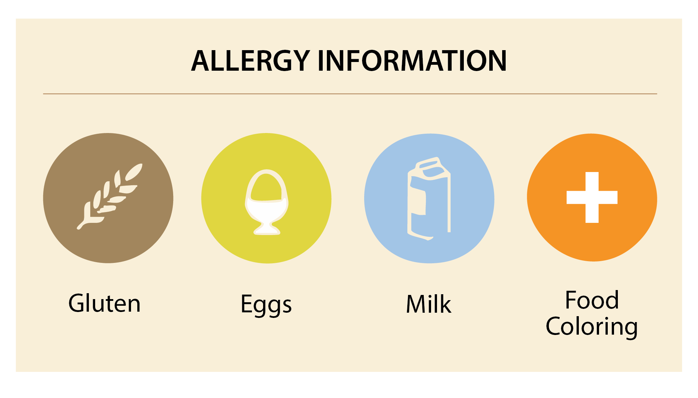
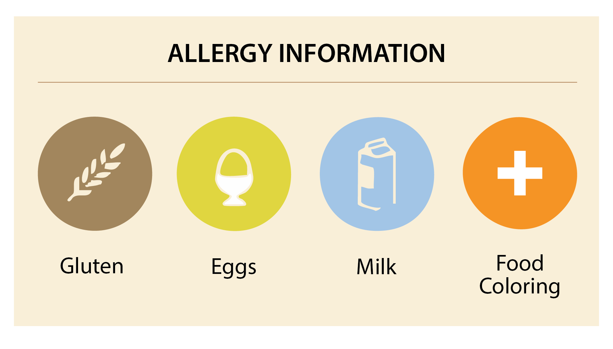

- 80g unsalted butter (room temp)
- 65g Eggs (room temp)
- 100g cream cheese (room temp)
- ¼ vanilla extract
- ⅛ tsp salt
- 22 — 25g all-purpose flour
- 3g cocoa powder
- 105g cake flour
- 2g baking powder
- 1g baking powder
- 110mL milk
- 150g whipped cream
- 35g sugar

Welcome to the best red velvet cupcake recipe!🧁
 

Q:Why room temperature?
A: Ingredients like butter and eggs at this temperature create a smooth, emulsified batter that traps air, leading to a better rise, more even texture, and a more tender crumb in the final product. It makes a huge difference!
Q:How do I store leftovers?
A: Store unfrosted cupcakes in an airtight container at room temperature for 1-2 days, and unused frosting in the fridge for up to 1 week. Defrost at room temperature for 30 minutes to 1 hour, or until thawed through. For frosted cupcakes, refrigerate in an airtight container for up to 1 week.
Moist cup cakes with classic cream cheese frosting that not only taste good, but look stunning. Easy to make and fun to decorate with a swirl of frosting and cake crumbles! Try making them for your loved ones. They're a perfect gift for a special pink day like Valentine's.